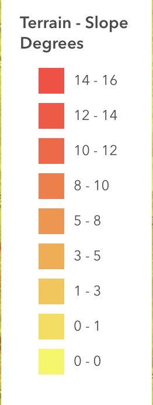
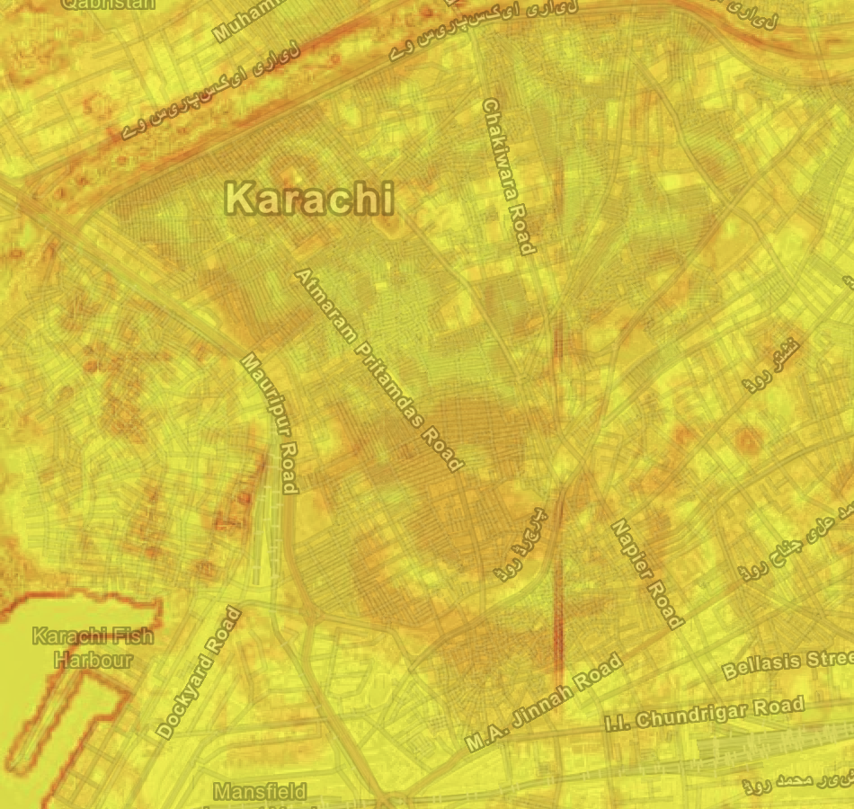
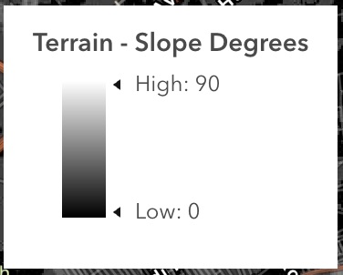
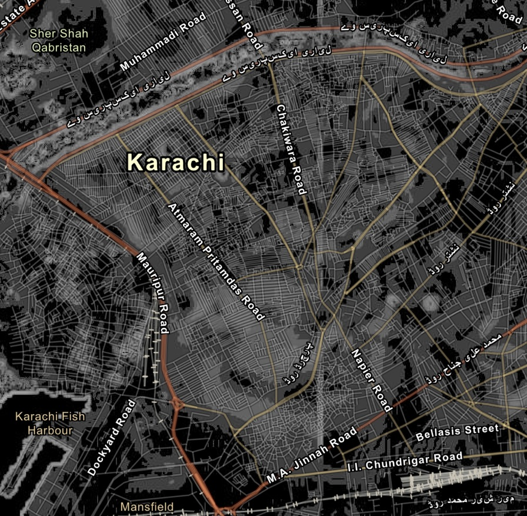

Week 03 · September 2026
Terrain
The question
What does the terrain of Lyari Town look like? More specifically what do slope patterns look like and what is their density? How will water be distributed during flooding events and rainfall?
The data
The elevation model used is Airbus_WorldDEM4Ortho_24m. The cell size is 24.74m, used under the NYU ArcGIS Online organizational subscription. The LE90 is 4m, data was collected from 12/1/2010 to 6/30/2014, and the original carbon density at 5-15cm is 149 hg/m^3. The soil sample was accessed via an Esri republication of soilgrids prediction of soil organic carbon (mass divided by mass) of world soils with licence CC BY 4.0.
The method
I added multiple layers, including terrain, terrain - slope degrees, and terrain - slope map. The major layer used is terrain - slope degrees with 9 classes, manual breaks, and 15% transparency. The area pictured is a closeup on the Lyari Town neighborhood as well as the nearby Lyari river and surrounding neighborhoods.




What I found
1. It is warmest in the sahara desert and middle east reigon. That is one of the dry belts.
There are wet belts in the Chinese subcontinent, Oceania, as well as the Carribean to the
Amazon rainforest.
2. The reigonal pattern is quite similar with a majority of readings appearing
dark red, then orange, and one or two in the yellow. These are spread out geographically.
3. Rain falls during the hot season. This can tell us that Karachi sits in a BWh or Hot
Desert climate. In the summer it expereinces a monsoon season, typically right after
the hottest time of the year.
4. Karachi is the odd one out with the rest of the major cities in Pakistan having a consistently
humid climate. Northern cities recieve consistent rainfall which is in direct opposition to Karachi's
exclusively rainy summer. Since its on the coast, it recieves monsoons that build over the Indian
subcontinent each summer. The rest of the year, Karachi is extremely dry, a factor that makes the city
even less able to deal with heavy monsoon rains due to dried out ground which struggles to absorb water.
5. It's hard to view precipitation clearly on the map. The main story is average temperature, and the color
of points should not be mistaken for precipitation measures as well.
What this does not show
This map does not show the specific weather patterns in the Lyari Town Neighborhood due to data collection occuring at the airport, which is slightly removed from the city.
AI use: AI-assisted for finding weather patterns across pakistan and the larger reigon around it. I verified by visiting websites that contained metorological data.